A documented student-work error is not a single botched figure: it is a rule that reproduces. The deformations here are functions of the fraction. The same vertical-strip rule transplanted onto a circle botches the model of 1/4, 1/5, 1/6, and 1/8 the same way, differing only in the denominator. Logic in Prolog (strategies/render/parametric_partition_deformation.pl, parametric_fraction_errors.pl); render projected through more-zeeman/render/drawer.js.
Replication check: 1/4 drew 3 interior cuts (expected 3), 1/5 drew 4 interior cuts (expected 4), 1/6 drew 5 interior cuts (expected 5), 1/8 drew 7 interior cuts (expected 7). The frame specs differ only by N; the pixels confirm it.
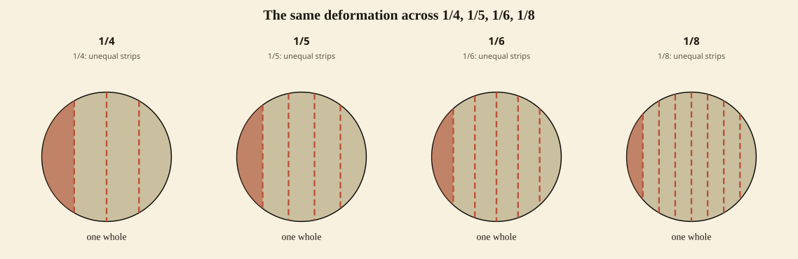
The licensed model in the host's own partition rule (solid, correct) beside the transplant (dashed, a labeled misconception). A deformation is only ever a labeled misconception, never an unlabeled productive diagram.
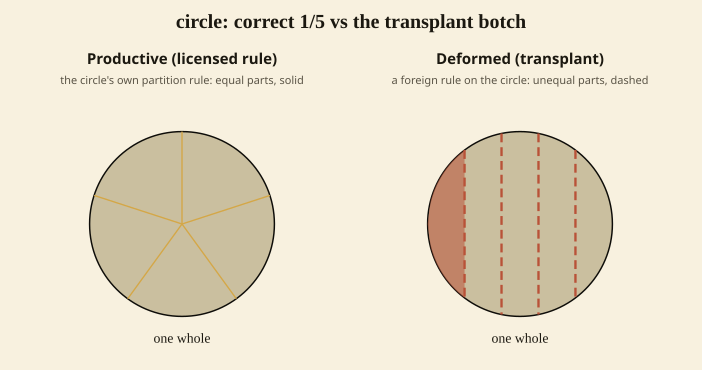
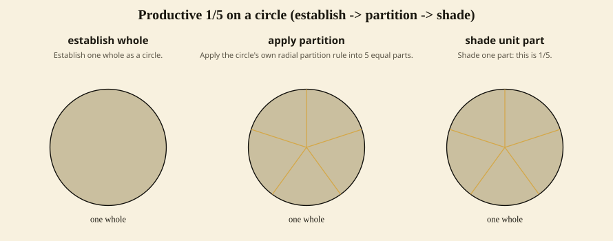
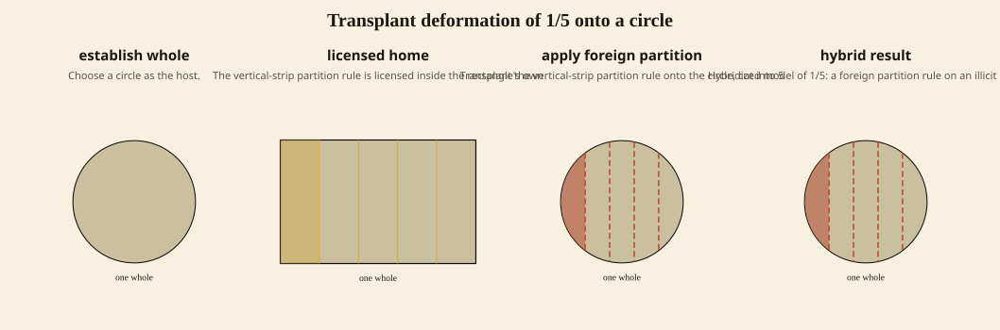
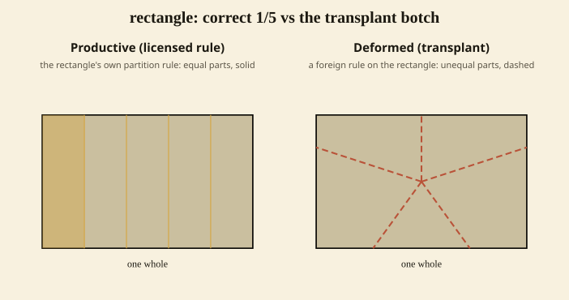
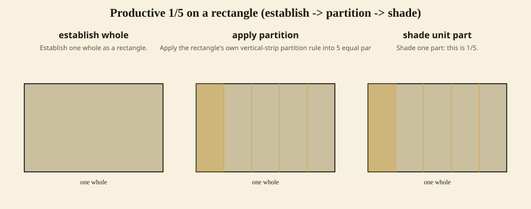
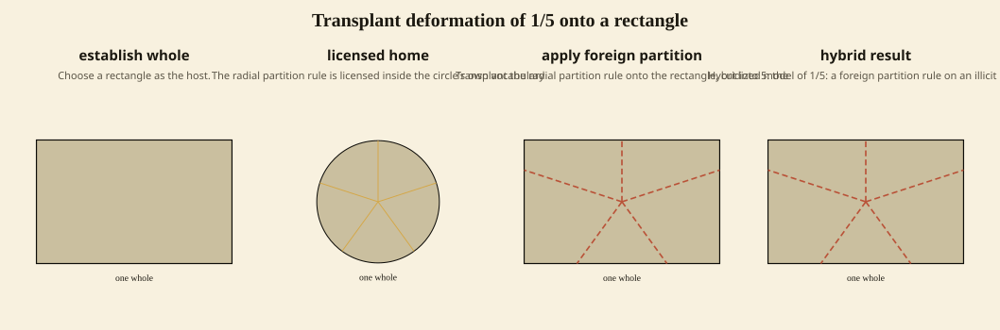
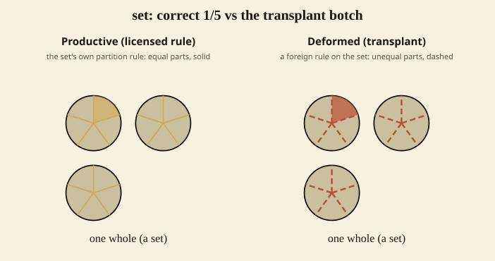
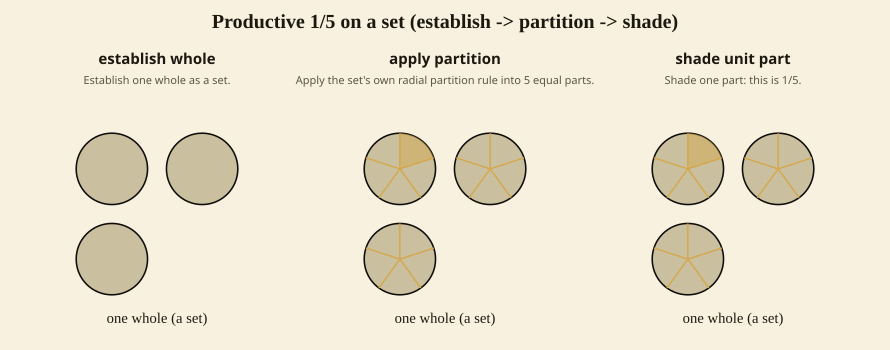
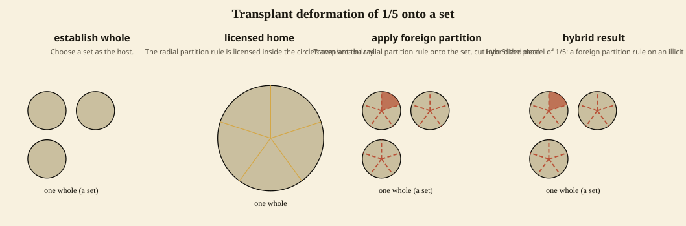
The host keeps its own primitive but applies it wrongly: pieces unequal, or the count off by one. Distinct from the transplant family, and also parametric over the fraction.
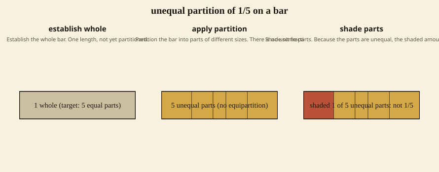
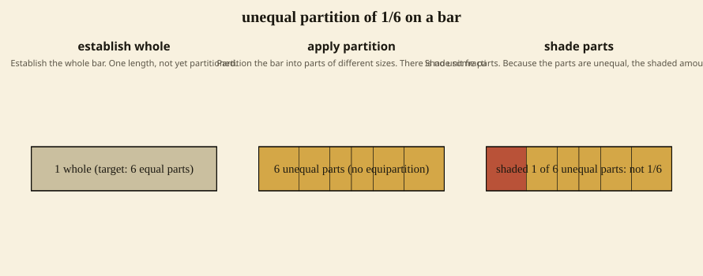
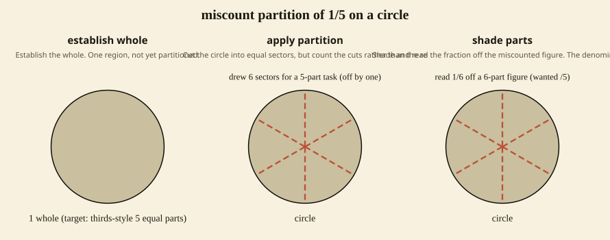
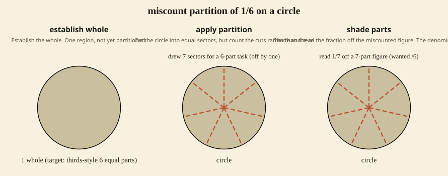